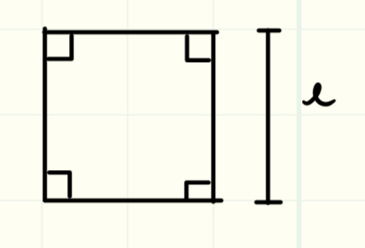
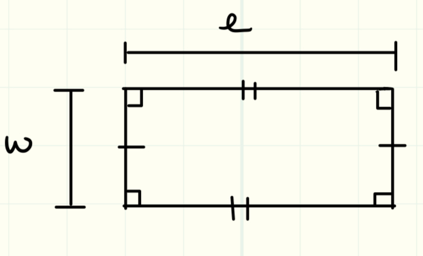
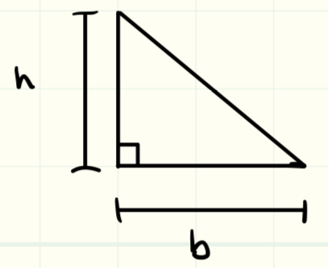
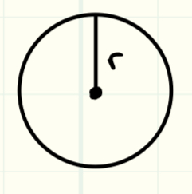

As a Canadian I much prefer to use metric to calculate areas and volumes,
however it is a skill to understand how to change the form metric and imperial.
you may be asking youreself, Shane why waste time to learn this??
its a good question, some designing problems are much easier to do in imperial units than metric
Most thermo-fluid system design classes use imperial units over metric

Square

Rectangles

Right angle Triangle
formula
This is a very easy formula to derive, a triangle is really just half a Rectangle
\(Area = 1/2*base*height\)

Circle
Formula
\(Area = pi*radius^2\)